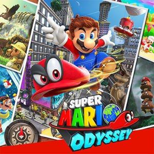

Complément
Introduction

Jaquette © Nintendo. Guide non officiel.
Cartes interactives
Chaque royaume a, au début de son Itinéraire, un lien vers sa carte interactive sur IGN (site en anglais) : lunes, pièces violettes, points de contrôle et chapimorphoses y sont placés. Il faut du réseau pour l'ouvrir. Au début de l'Itinéraire des parties, La zone en images renvoie en plus à une soluce illustrée en français (Millenium ou ActuGaming) quand il en existe une.
Objectif
Bienvenue. Ce guide t'accompagne du tout premier saut jusqu'au 999ᵉ — c'est-à-dire du prologue sur le dirigeable de Bowser jusqu'au haut-de-forme posé sur le château de Peach quand le compteur est plein.
Super Mario Odyssey est sorti le 27 octobre 2017 sur Nintendo Switch, et il n'a jamais reçu de DLC payant : tout son contenu est dans la cartouche, plus six mises à jour gratuites dont la dernière, la 1.4.1, date de juin 2025 et optimise le jeu pour la Nintendo Switch 2.
L'idée du jeu tient en une phrase : Mario a perdu sa casquette, et celle qui la remplace peut coiffer les autres. Cappy, l'esprit-chapeau qui devient ton allié, te permet de prendre le contrôle de presque tout ce que tu croises — un Goomba, un Tyrannosaure, un obus, une plaque d'égout, un morceau de viande. Cela s'appelle une chapimorphose, il y en a 52, et c'est autour de cette seule idée que tout le jeu est construit.
Ce qu'il faut savoir avant de commencer :
| Le jeu en chiffres | |
|---|---|
| Pays à visiter | 17 |
| Emplacements de lunes de puissance | 836 |
| Total au compteur si tu ramasses tout | 880 (22 emplacements donnent une multilune, qui vaut 3) |
| Maximum du compteur | 999 (en achetant des lunes en boutique) |
| Lunes nécessaires pour terminer l'histoire | 124 |
| Chapimorphoses | 52 |
| Chapeaux et tenues | 55 + 55 |
| Pièces locales | 1 000 |
| Drapeaux relais | 85 |
⏳ Le générique arrive vers 124 lunes. Autrement dit : quand tu vois défiler les noms, tu as fait un huitième du jeu. C'est la chose la plus importante à comprendre sur Odyssey.
Itinéraire
Comment ce guide est organisé
Les parties 01 à 20 suivent l'ordre de visite du joueur, un pays après l'autre. Chacune contient l'histoire du pays, toutes ses lunes, tout ce qu'on peut y acheter, et une check-list.
Les parties 21 à 28 sont transversales : les mouvements de Mario, les 52 chapimorphoses, les 110 tenues, les 1 000 pièces locales, les 27 combats de boss, ce qui change après le générique, le multijoueur, et les techniques avancées. Elles se lisent quand tu veux et se consultent en cours de route.
La partie 99 rassemble l'index, les manquables et la check-list finale.
⏳ Le meilleur moment pour lire les parties transversales : 21 (les mouvements) et 22 (les chapimorphoses) juste après le pays des Chutes ; 26 (après le générique) le jour où tu bats Bowser.
Comment lire les tableaux de lunes
Chaque partie de pays contient un tableau Butin exhaustif avec les lunes, dans l'ordre du journal du jeu, ce qui te permet de comparer ligne par ligne avec ton écran. Chaque ligne commence par un préfixe de disponibilité entre crochets, qui dit à partir de quand la lune existe :
| Préfixe | Ce qu'il veut dire |
|---|---|
| [Début] | dès ton arrivée dans le pays |
| [Obj. 1], [Obj. 2]… | après l'objectif d'histoire correspondant |
| [Retour] | après avoir quitté le pays puis y être revenu |
| [Autre pays] | se débloque depuis un autre pays, ou exige une tenue achetée ailleurs |
| [Bowser] | après avoir vaincu Bowser au pays de la Lune |
| [Roche] | après avoir ouvert la roche lunaire du pays |
⏳ C'est l'information la plus utile du guide. La question « pourquoi cette lune n'est-elle pas là ? » a presque toujours pour réponse : « parce que le préfixe n'est pas encore rempli. »
Déroulé pas à pas
Les systèmes essentiels
La lune de puissance. La monnaie de la progression. Elle sert de carburant à l'Odyssée, ton vaisseau : chaque pays en réclame un certain nombre pour que tu puisses repartir. Tu les déposes dans le globe à l'intérieur du vaisseau.
La multilune. Une lune dorée plus grosse, qui vaut 3. Il y en a 22, presque toujours à la fin d'un objectif d'histoire.
L'éclat de lune. Cinq éclats brillants dispersés dans une zone : les réunir fabrique une lune. Parfois quatre au lieu de cinq.
La pièce d'or. Elle sert à trois choses : acheter des lunes à 100 pièces en boutique, acheter des tenues, et payer les indices du Toad. Tu en perds 10 quand tu meurs — c'est toute la sanction du jeu.
La pièce locale. Violette, avec une forme différente dans chaque pays. Elle ne vaut que dans la boutique du pays où on l'a ramassée. Il y en a 1 000 en tout, et dans chaque pays leur total correspond exactement au prix de tous les articles de la boutique.
Le drapeau relais. Le point de reprise. Plante-les systématiquement : ils servent aussi de points de téléportation depuis la carte, et deux lunes de Toadette dépendent de leur nombre.
La jauge de vie. Trois points. Le Cœur de soin, à 50 pièces d'or en boutique, la fait passer à six jusqu'à ce que tu changes de pays.
⏳ Il n'y a pas de vies dans ce jeu. Pas de compteur, pas de game over. Mourir coûte 10 pièces et te renvoie au dernier drapeau.
La porte à chapeau. Une porte ronde ornée d'un chapeau : elle mène à une zone bonus, et contient presque toujours deux lunes — une évidente et une cachée. Une chapimorphose ne peut pas la franchir : il faut se libérer avant.
Le tuyau lunaire. Un tuyau qui n'apparaît qu'après l'ouverture de la roche lunaire du pays. Il mène à un petit niveau complet, avec là encore deux lunes.
La roche lunaire. Un gros bloc noir, un par pays, inerte pendant toute l'histoire. Après le générique, Cappy t'indique sa position et l'ouvrir libère des dizaines de lunes. Il y en a 14, et c'est le geste le plus rentable du jeu.
La photo d'indice. Une image accrochée quelque part, qui montre un endroit d'un autre pays. Il faut y aller et faire une charge au sol au bon endroit. Il y en a 21.
Le tableau. Un cadre qui téléporte dans un autre pays, dans une zone isolée qui contient une lune inaccessible autrement. Chaque pays en a un ou deux, sauf le pays des Chapeaux.
La boutique Crazy Cap. Présente dans 13 pays. Elle vend une lune à 100 pièces d'or — 11 après le générique —, un Cœur de soin, des tenues, des souvenirs et des vignettes.
Le journal. Après le générique, il liste toutes les lunes de chaque pays, tes pièces locales restantes et les 61 défis de Toadette avec ta progression chiffrée. C'est ton tableau de bord.
Les trois aides intégrées
Le jeu t'aide, et gratuitement pour deux d'entre elles :
| Aide | Coût | Ce qu'elle donne |
|---|---|---|
| Perrotruc | gratuit | le nom d'une lune que tu n'as pas trouvée dans le pays |
| Le Toad de la boutique | 50 pièces d'or | l'emplacement exact d'une lune, sur ta carte — mais pas la méthode |
| Le robot amiibo | gratuit | scanne un amiibo : il part chercher une lune et en marque la position cinq minutes plus tard. Trois amiibo à la fois |
La structure du jeu
L'histoire se déroule en quinze pays, dans un ordre imposé, puis deux mondes bonus s'ajoutent après le générique.
| # | Pays | Lunes | Exigées pour repartir |
|---|---|---|---|
| 1 | Pays des Chapeaux | 31 | 0 |
| 2 | Pays des Chutes | 40 | 5 |
| 3 | Pays des Sables | 89 | 16 |
| 4 | Pays du Lac | 42 | 8 |
| 5 | Pays de la Forêt | 76 | 16 |
| 6 | Pays des Nuages | 9 | 0 |
| 7 | Pays Perdu | 35 | 10 |
| 8 | Pays des Gratte-ciel | 81 | 20 |
| 9 | Pays des Neiges | 55 | 10 |
| 10 | Pays de la Mer | 71 | 10 |
| 11 | Pays de la Cuisine | 68 | 18 |
| 12 | Pays des Ruines | 10 | 3 |
| 13 | Pays de Bowser | 62 | 8 |
| 14 | Pays de la Lune | 38 | 0 |
| 15 | Royaume Champignon | 104 | — |
| 16 | Côté obscur | 24 | — |
| 17 | Côté très obscur | 1 | — |
Total : 836 emplacements. Et la somme de la colonne de droite fait 124, le minimum pour voir le générique.
⏳ Les noms anglais, pour retrouver les vidéos et les guides anglophones : Cap, Cascade, Sand, Lake, Wooded, Cloud, Lost, Metro, Snow, Seaside, Luncheon, Ruined, Bowser's, Moon, Mushroom Kingdom, Dark Side, Darker Side.
Quêtes et lieux
Dix conseils pour bien commencer
- Plante tous les drapeaux relais que tu croises. C'est gratuit, ça sert de point de reprise et de téléportation, et deux lunes en dépendent.
- Essaie de coiffer tout ce qui bouge — et tout ce qui ne bouge pas. Six chapimorphoses du jeu sont des objets du décor : un arbre, un rocher, une plaque d'égout, un taxi, une lettre, un morceau de viande.
- Fais une charge au sol dès que le sol brille, vibre ou fait un renflement. 81 lunes du jeu se révèlent comme ça.
- Apprends le rebond sur Cappy tôt. Saut, Cappy maintenu devant toi, plongeon dessus. C'est la technique la plus rentable du jeu.
- Achète tout ce qui s'achète en pièces locales. Ça ne coûte pas une pièce d'or, ça débloque des lunes, et le total tombe pile dans chaque pays.
- Prends la lune à 100 pièces d'or dans chaque boutique. C'est la lune la plus facile du jeu, et elle compte pour repartir.
- Plante les graines dès ton premier passage. Les fruits dorés mettent du temps réel à pousser : plantées tôt, elles seront mûres quand tu repasseras.
- Quand le jeu te dit de partir, pars. Ne t'épuise pas à finir un pays au premier passage : la moitié de son contenu n'existe pas encore.
- Ignore les gros blocs noirs. Ce sont les roches lunaires : rien n'est possible avec elles avant le générique.
- Sers-toi du Perrotruc et du Toad à 50 pièces. Le jeu est conçu pour qu'on demande de l'aide, et ce guide s'utilise très bien en complément.
Dix erreurs de débutant
- Croire que le générique est la fin. Il arrive à 124 lunes sur 880. Battre Bowser ouvre le royaume Champignon, les 14 roches lunaires, le Côté obscur et le Côté très obscur.
- Chercher des lunes au pays des Chapeaux au premier passage. Il n'y en a aucune : les 31 lunes du pays n'existent qu'à partir du moment où l'Odyssée vole. Même chose au pays des Nuages.
- Vouloir finir un pays avant de partir. Une bonne moitié des lunes de chaque pays est verrouillée derrière la roche lunaire, donc derrière Bowser.
- Oublier de planter les graines. Elles poussent en temps réel. Plantées à la fin de la partie, elles te feront attendre pour rien.
- Ne pas acheter les tenues « de pays ». 22 lunes exigent une tenue précise, et elles sont impossibles sans. Ce n'est pas une question d'adresse.
- Oublier que cinq tenues s'achètent ailleurs qu'elles ne servent. Le cow-boy des Sables sert au Lac, le mécano de la Forêt à la Cuisine, le pirate de la Mer au Lac, le clown de la Cuisine aux Gratte-ciel, la combinaison spatiale de la Lune au Lac.
- Ne pas parler au Toad devant le château de Peach. C'est lui qui lance la chaîne de Peach : sans lui, quinze lunes restent invisibles.
- Passer devant Goombette en Mario. Elle s'enfuit devant toute forme qui n'est pas un Goomba. Sept lunes reposent là-dessus.
- Négliger les zones bonus. Chaque porte à chapeau et chaque tuyau lunaire contient deux lunes, jamais une. Ne ressors pas après la première.
- Avoir peur d'échouer. Il n'y a pas de vies, pas de game over, et les défis chronométrés se relancent immédiatement. Le seul coût d'une erreur, c'est 10 pièces.
Butin exhaustif
Cette introduction ne donne aucun objet. En revanche, voici le vocabulaire du jeu, avec les noms français officiels employés dans tout ce guide.
| Nom exact | Type | Où / comment l'obtenir | Utilité |
|---|---|---|---|
| Lune de puissance | Objet clé | Partout : 836 emplacements | Le carburant de l'Odyssée et la mesure de ta progression |
| Multilune | Objet clé | 22 emplacements, presque toujours au bout d'un objectif d'histoire | Vaut 3 lunes |
| Éclat de lune | Objet | Par groupes de quatre ou cinq, dans une zone délimitée | Les réunir fabrique une lune |
| Pièce d'or | Monnaie | Partout | Lunes de boutique, tenues, indices du Toad ; tu en perds 10 en mourant |
| Pièce locale | Monnaie | 1 000 réparties sur 13 pays, avec une forme propre à chacun | La seule monnaie acceptée pour les tenues, souvenirs et vignettes du pays |
| Cœur de soin | Objet | 50 pièces d'or en boutique, et chez le Toad qui apparaît devant une arène difficile | Fait passer ta vie de 3 à 6 points jusqu'au changement de pays |
| Drapeau relais | Objet | 85 dans le jeu | Point de reprise et de téléportation ; deux lunes de Toadette en dépendent |
| Roche lunaire | Objet | 14, une par pays, ouvrables après le générique | Libèrent 194 lunes à elles seules |
| Photo d'indice | Objet | 21 dans le jeu | Montre l'emplacement d'une lune dans un autre pays |
| Tableau | Objet | Un ou deux par pays, sauf au pays des Chapeaux | Téléporte vers une zone isolée d'un autre pays, avec une lune |
| Porte à chapeau | Lieu | Partout | Zone bonus, presque toujours deux lunes |
| Tuyau lunaire | Lieu | Après l'ouverture de la roche lunaire | Petit niveau complet, deux lunes |
| Boutique Crazy Cap | Lieu | 13 pays | Lune à 100 pièces d'or, Cœur de soin, tenues, souvenirs, vignettes |
| Souvenir | Objet | 26, deux par boutique | Décore l'intérieur de l'Odyssée |
| Vignette | Objet | 17, une par boutique, plus quatre motifs au royaume Champignon | Se colle sur la coque de l'Odyssée |
| Chapimorphose | Mécanique | 52 cibles différentes | Le cœur du jeu ; trois lunes de Toadette comptent tes trouvailles |
| Perrotruc | PNJ | Un par pays | Donne gratuitement le nom d'une lune non trouvée |
| Le Toad de la boutique | PNJ | Un par pays | Donne l'emplacement d'une lune pour 50 pièces d'or |
| Le robot amiibo | PNJ | Un par pays | Donne un emplacement gratuit au bout de cinq minutes, trois amiibo à la fois |
| Capitaine Toad | PNJ | 14 pays — partout sauf aux Nuages, aux Ruines et au Côté très obscur | Une lune par rencontre |
| Peach | PNJ | 15 pays, après le générique, dans un ordre strict | Une lune par rencontre |
| Goombette | PNJ | 7 emplacements | Une lune, si tu viens en Goomba |
| Toadette | PNJ | Royaume Champignon, à côté du trône | 61 lunes de défi |
Conseils et pièges
- Ce jeu ne punit jamais. Pas de vies, pas de game over, pas de quête qui se referme. Tout ce que tu rates, tu peux y revenir. La seule exception du jeu entier concerne quelques drapeaux relais qui disparaissent avec leur zone — et le défi correspondant n'en demande que 80 sur 85 justement pour cette raison.
- Les lunes sont généreuses. Contrairement aux étoiles de Super Mario 64 ou aux soleils de Sunshine, une lune ne demande souvent que dix secondes : une charge au sol, un lancer de Cappy, un saut. Le jeu récompense la curiosité plus que la performance.
- Mais elles sont nombreuses. 836 emplacements. Ne cherche pas à tout faire en un passage : Odyssey est conçu pour qu'on revienne.
- Le journal est ton meilleur outil. Ce guide te dit comment ; le journal te dit combien il t'en manque et où.
- Les noms comptent. Ce guide emploie systématiquement les noms français officiels du jeu : charge au sol et non « attaque plongeante », chapimorphose et non « capture », Crazy Cap et non « Chapeau fou ». Tu peux donc lire un nom ici et le retrouver mot pour mot à l'écran.
- Le jargon de joueur reste en anglais, parce que c'est ainsi qu'on le dit : spot, timing, farmer, speedrun. Il est expliqué à sa première apparition.
- Quelques points restent marqués « ⚠️ à vérifier en jeu ». Ce sont ceux où les sources françaises se contredisent ou se taisent. Ils sont tous rassemblés dans les annexes, et ils portent sur des noms ou des détails, jamais sur l'emplacement d'une lune.
Alertes
- ⚠️ Il n'y a aucun point de non-retour dans ce jeu. Aucune lune, aucune tenue, aucun personnage ne se perd définitivement.
- ⚠️ Sauf les drapeaux relais. Sur les 85 du jeu, une poignée se trouve dans des zones qui disparaissent. Plante-les systématiquement. C'est le seul contenu réellement manquable d'Odyssey.
- ⏳ Le générique n'est pas la fin. Il arrive à 124 lunes sur 880.
- ⏳ Deux mouvements exigent de secouer la manette : le coup de chapeau rotatif et le jet de chapeau avec effet. Sans détection de mouvement, quelques lunes deviennent inaccessibles. C'est la seule limitation matérielle du jeu.
- ⏳ Aucun contenu à lunes ne dépend d'internet, des amiibo ou d'un accessoire. Le multijoueur, la Chasse aux ballons, le mode Photo, la VR et les amiibo sont tous facultatifs.
Check-list
Avant de commencer
- Jeu à jour (1.4.1 sur Nintendo Switch 2, 1.3.0 sur Switch 1)
- Détection de mouvement disponible (Joy-Con ou manette Pro)
- Partie 21 parcourue — les mouvements de Mario
- Partie 22 parcourue — les 52 chapimorphoses
Les réflexes à prendre
- Planter chaque drapeau relais
- Charge au sol sur tout sol qui brille ou vibre
- Lancer Cappy sur tout ce qui est incongru
- Rebond sur Cappy maîtrisé
- Planter les graines dès le premier passage
- Acheter tout en pièces locales dans chaque boutique
- Prendre la lune à 100 pièces d'or de chaque boutique
- Ne pas s'acharner sur un pays au premier passage
Le grand objectif
- 124 lunes — le générique
- 250 lunes — le Côté obscur
- 500 lunes — le Côté très obscur
- 836 / 836 emplacements — soit 880 au compteur
- 999 / 999 au compteur — et la vraie fin au château de Peach